Beyond PCs: Mixed Effects Models & LD Score Regression
BIOS 25328 · Lecture 6
2026-04-08
Last week’s recap
We showed that population structure inflates GWAS test statistics — and PCs fix it
- The HapMap growth phenotype differed by population → J-shaped p-value histogram
- Adding the top 4 PCs as covariates → uniform p-value distribution, inflation gone
- PCs are the most common correction in practice
But two questions remain:
- PCs don’t handle everything — cryptic relatedness and family structure require a more principled model
- Inflated λ doesn’t always mean bias — in large studies λ > 1 can reflect true polygenicity, not confounding
Learning Objectives
- Understand genomic control (λ inflation factor)
- Build intuition for the mixed effects model (GRM as random effect) — answers question 1
- Understand the kinship/GRM as a random effect covariance structure
Time permitting
- Learn how LD score regression separates true polygenicity from confounding — answers question 2
- Interpret genetic correlation estimates from LD score regression
1. Genomic Control (Devlin & Roeder, 1999)
- Assumption: effects of population stratification and cryptic relatedness are constant across the genome
- Test statistics are distributed \(\lambda \times \chi^2\)
- Estimate \(\lambda\) using:
- Mean of test statistics, or
- Median: \(\lambda = \text{median}(\chi^2) / 0.4549\)
- \(\lambda < 1.05\) considered acceptable inflation
Example of a Nice GWAS QQ-Plot
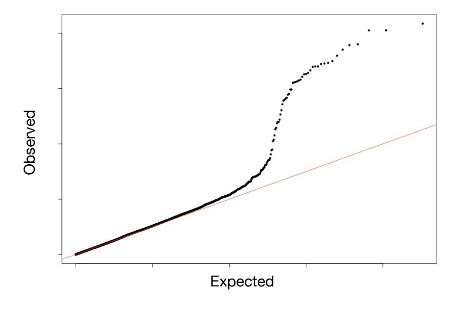
Genomic Control Adjustment
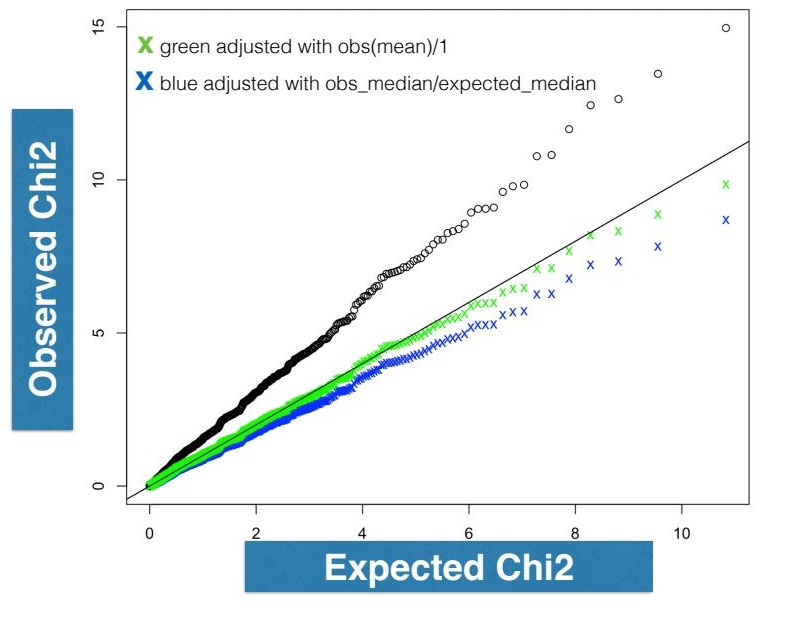
Mixed Effects Models
Recall the Regression Approach to GWAS
\[Y = X\beta + \epsilon\]
- \(\beta\) = fixed effect (SNP effect of interest)
- \(X\) = genotype matrix (SNP dosages)
Works well when individuals are unrelated and ancestry is homogeneous
Extending the Regression Model with a Random Effect
\[Y = X\beta + u + \epsilon\]
\[u \sim N(0,\, \sigma_g^2 \cdot \mathbf{K})\]
- \(\beta\) = fixed effect (SNP effect of interest)
- \(u\) = random effect (captures population/family structure)
- \(\mathbf{K}\) = genetic relatedness matrix (GRM)
Useful to adjust for confounding due to population structure, family structure, and cryptic relatedness
Kang et al. Variance component model to account for sample structure in genome-wide association studies. Nature Genetics, 2010.
Example with 4 Individuals — Vectors
\[Y = X\beta + u + \epsilon \qquad u \sim N(0, \sigma_g^2 \cdot \mathbf{K})\]
Spell out the vectors for 4 individuals:
\[\begin{bmatrix} y_1 \\ y_2 \\ y_3 \\ y_4 \end{bmatrix} = \begin{bmatrix} x_1 \\ x_2 \\ x_3 \\ x_4 \end{bmatrix} \cdot \beta + \begin{bmatrix} u_1 \\ u_2 \\ u_3 \\ u_4 \end{bmatrix} + \begin{bmatrix} \epsilon_1 \\ \epsilon_2 \\ \epsilon_3 \\ \epsilon_4 \end{bmatrix}\]
\[Y \sim N(X\beta,\; \sigma_g^2 \cdot \mathbf{K} + \sigma_e^2 \cdot \mathbf{I})\]
Example with 4 Individuals — Random Effect u
\[Y = X\beta + u + \epsilon \qquad u \sim N(0, \sigma_g^2 \cdot \mathbf{K})\]
Spell out the vector \(u\) and its variance matrix:
\[\begin{bmatrix} u_1 \\ u_2 \\ u_3 \\ u_4 \end{bmatrix} \sim N \left( \begin{bmatrix} 0 \\ 0 \\ 0 \\ 0 \end{bmatrix},\; \sigma_g^2 \cdot \begin{bmatrix} k_{11} & k_{12} & k_{13} & k_{14} \\ k_{21} & k_{22} & k_{23} & k_{24} \\ k_{31} & k_{32} & k_{33} & k_{34} \\ k_{41} & k_{42} & k_{43} & k_{44} \end{bmatrix} \right)\]
\(u\) is a multivariate normal random variable
Example with 4 Individuals — Residual ε
\[Y = X\beta + u + \epsilon \qquad u \sim N(0, \sigma_g^2 \cdot \mathbf{K})\]
Spell out the vector \(\epsilon\) and its variance matrix:
\[\begin{bmatrix} \epsilon_1 \\ \epsilon_2 \\ \epsilon_3 \\ \epsilon_4 \end{bmatrix} \sim N \left( \begin{bmatrix} 0 \\ 0 \\ 0 \\ 0 \end{bmatrix},\; \sigma_e^2 \cdot \begin{bmatrix} 1 & 0 & 0 & 0 \\ 0 & 1 & 0 & 0 \\ 0 & 0 & 1 & 0 \\ 0 & 0 & 0 & 1 \end{bmatrix} \right)\]
\(\epsilon\) is a multivariate normal random variable
Checkpoint: What is the Distribution of Y?
\[Y = X\beta + u + \epsilon\]
\[u \sim N(0, \sigma_g^2 \cdot \mathbf{K}) \qquad \epsilon \sim N(0, \sigma_e^2 \cdot \mathbf{I}_{n \times n})\]
\[Y \sim N(\,\cdot\,,\; \cdot\,)\]
\[Y \sim N(X\beta,\; \sigma_g^2 \cdot \mathbf{K} + \sigma_e^2 \cdot \mathbf{I})\]
Setup: K for 4 Individuals, 2 Populations
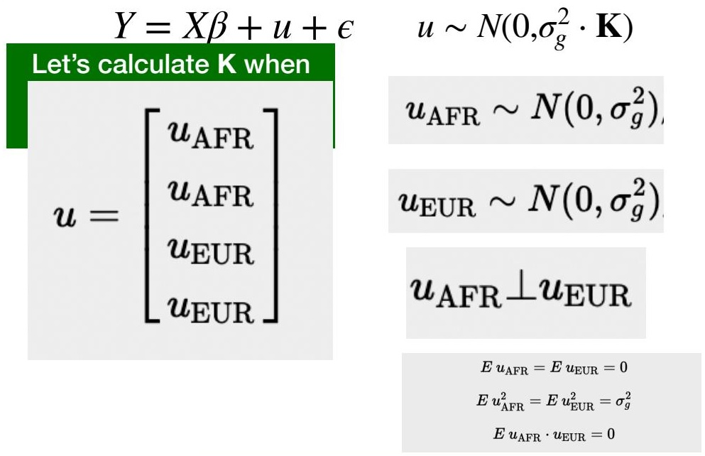
Deriving K — Setting Up the Variance
\[Y = X\beta + u + \epsilon \qquad u \sim N(0, \sigma_g^2 \cdot \mathbf{K})\]
\[\sigma_g^2 \cdot K = \text{Var}(u) \qquad \small\text{recall: } \text{Var}(u) = E(u - Eu)(u-Eu)' = Euu',\; E(u) = 0\]
\[\text{Var}\begin{bmatrix}u_1\\u_2\\u_3\\u_4\end{bmatrix} = Euu' = E\!\left(\begin{array}{ll}\begin{bmatrix}u_1\\u_2\\u_3\\u_4\end{bmatrix} & \begin{array}{l}[u_1\;u_2\;u_3\;u_4]\\\phantom{u}\\\phantom{u}\\\phantom{u}\\\phantom{u}\end{array}\end{array}\right)\]
\(Eu_{\rm AFR} = Eu_{\rm EUR} = 0 \qquad Eu_{\rm AFR}^2 = Eu_{\rm EUR}^2 = \sigma_g^2 \qquad Eu_{\rm AFR} \cdot u_{\rm EUR} = 0\)
Deriving K — Expanding the Outer Product
\[Y = X\beta + u + \epsilon \qquad u \sim N(0, \sigma_g^2 \cdot \mathbf{K})\]
\[\sigma_g^2 \cdot K = \text{Var}(u) \qquad \small\text{recall: } \text{Var}(u) = E(u - Eu)(u-Eu)' = Euu',\; E(u) = 0\]
\[\sigma_g^2 \cdot \mathbf{K} = E\begin{bmatrix} u_1 u_1 & u_1 u_2 & u_1 u_3 & u_1 u_4 \\ u_2 u_1 & u_2 u_2 & u_2 u_3 & u_2 u_4 \\ u_3 u_1 & u_3 u_2 & u_3 u_3 & u_3 u_4 \\ u_4 u_1 & u_4 u_2 & u_4 u_3 & u_4 u_4 \end{bmatrix}\]
expected value (\(E\)) of a matrix is the \(E\) of each element of the matrix
Deriving K — Taking Expectations
\[Y = X\beta + u + \epsilon \qquad u \sim N(0, \sigma_g^2 \cdot \mathbf{K})\]
\[\sigma_g^2 \cdot K = \text{Var}(u) \qquad \small\text{recall: } \text{Var}(u) = E(u - Eu)(u-Eu)' = Euu',\; E(u) = 0\]
\[\sigma_g^2 \cdot \mathbf{K} = \begin{bmatrix} Eu_1 u_1 & Eu_1 u_2 & Eu_1 u_3 & Eu_1 u_4 \\ Eu_2 u_1 & Eu_2 u_2 & Eu_2 u_3 & Eu_2 u_4 \\ Eu_3 u_1 & Eu_3 u_2 & Eu_3 u_3 & Eu_3 u_4 \\ Eu_4 u_1 & Eu_4 u_2 & Eu_4 u_3 & Eu_4 u_4 \end{bmatrix}\]
\(Eu_{\rm AFR} = Eu_{\rm EUR} = 0 \qquad Eu_{\rm AFR}^2 = Eu_{\rm EUR}^2 = \sigma_g^2 \qquad Eu_{\rm AFR} \cdot u_{\rm EUR} = 0\)
\(u_1 = u_2 = u_{\rm AFR}~~~\) and \(~~~u_3 = u_4 = u_{\rm EUR}\)
Deriving K — Final Result
\[Y = X\beta + u + \epsilon \qquad u \sim N(0, \sigma_g^2 \cdot \mathbf{K})\]
\[\sigma_g^2 \cdot K = \text{Var}(u) \qquad \small\text{recall: } \text{Var}(u) = E(u - Eu)(u-Eu)' = Euu',\; E(u) = 0\]
\[\sigma_g^2 \cdot \mathbf{K} = \sigma_g^2 \cdot \begin{bmatrix} 1 & 1 & 0 & 0 \\ 1 & 1 & 0 & 0 \\ 0 & 0 & 1 & 1 \\ 0 & 0 & 1 & 1 \end{bmatrix}\]
\(Eu_{\rm AFR} = Eu_{\rm EUR} = 0 \qquad Eu_{\rm AFR}^2 = Eu_{\rm EUR}^2 = \sigma_g^2 \qquad Eu_{\rm AFR} \cdot u_{\rm EUR} = 0\)
\(u_1 = u_2 = u_{\rm AFR}~~~\) and \(~~~u_3 = u_4 = u_{\rm EUR}\)
Genetic Relatedness Matrix (GRM) — HapMap Trio Example
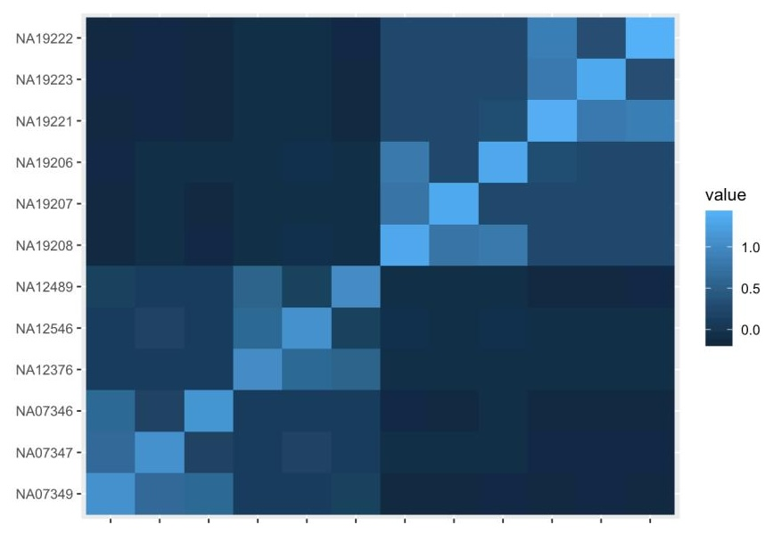
Mixed Effects Correction vs. PC vs. Genomic Control
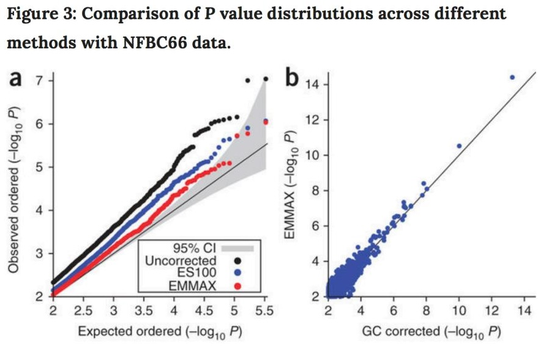
Combination Strategy vs. Pure Mixed Effects
Combination strategy (common practice)
- Remove close relatives
- Correct broad sample structure with PCs
- Correct residual inflation with genomic control (divide χ² by λ)
Mixed effects model
- Use genetic relatedness matrix to account for all sample structure
- PCs are eigenvectors of the GRM
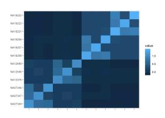
LD Score Regression
What is a Statistic?
To understand genomic control, we need to know what is a statistic.
In statistics terminology, a statistic is a function of the data
Examples of Statistics
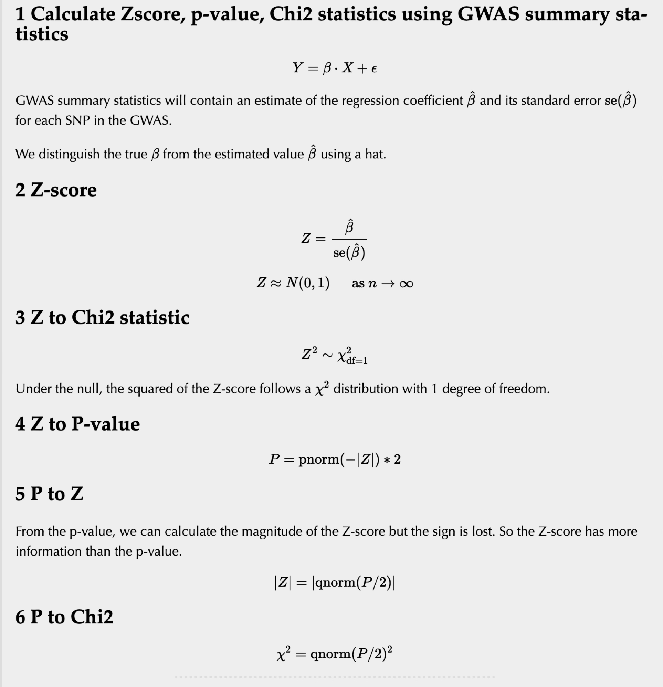
Inflation of Test Statistics: Two Causes
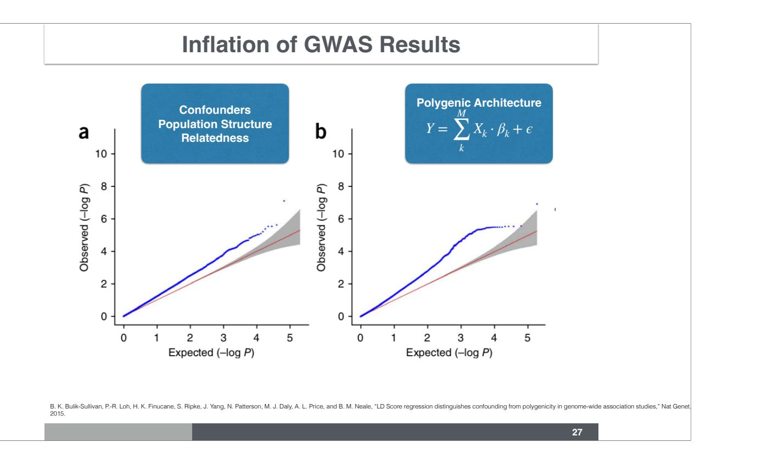
Inflation of summary statistics can be due to:
- Confounders — population structure, cryptic relatedness
- True polygenicity — most variants have a causal effect or are in LD with causal variants
Genomic control cannot distinguish between these two. Dividing by λ punishes real signal.
LD and Chi² Statistics
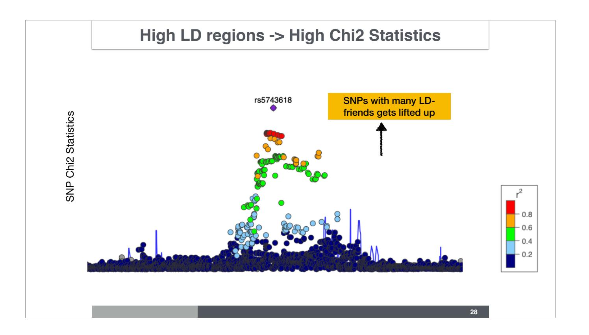
LD Score: Measure of LD with Neighboring Variants
\[l_j = \sum_k r_{j,k}^2\]
- \(l_j\) = LD score of variant \(j\)
- Measures amount of genetic variation tagged by variant \(j\)
- SNPs in high-LD regions have high LD scores
Polygenic Additive Model
\[Y = \sum_{k}^{M} X_k \cdot \beta_k + \epsilon \qquad \beta \sim N(0, \sigma_{\beta}^2)\]
- All \(M\) common SNPs contribute to the phenotype
- Effect sizes are drawn independently from a normal distribution
- This is the main model for common disease genetics
LD Score Regression Distinguishes Confounding from Polygenicity
\[E[\chi^2 \mid l_j] = \frac{Nh^2}{M} l_j + Na + 1\]
- Slope (\(Nh^2/M\)): driven by true polygenicity → estimates heritability
- Intercept (\(Na + 1\)): driven by confounding → estimates population stratification / relatedness bias
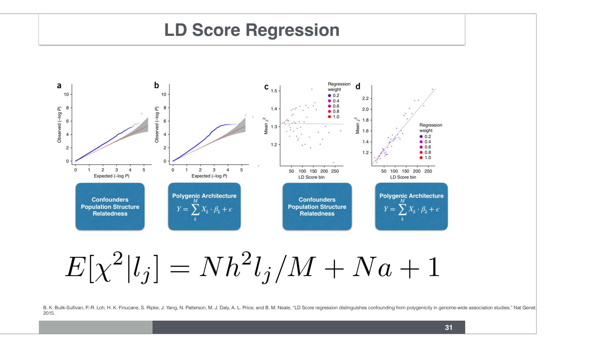
LD Score Regression — Parameters

| Parameter | Meaning |
|---|---|
| \(N\) | sample size |
| \(M\) | number of SNPs |
| \(h^2/M\) | variance explained per SNP |
| \(a\) | confounding: cryptic relatedness + population stratification |
| \(l_j = \sum_k r^2_{jk}\) | amount of genetic variation tagged by SNP \(j\) |
LD Score Regression — Schizophrenia
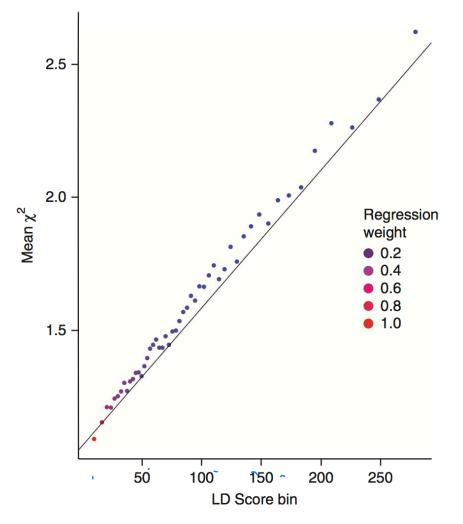
Genomic Control vs. LD Score Regression
| Trait | \(\lambda_{GC}\) (raw) | \(\lambda_{GC}\) (corrected) | LDSC intercept |
|---|---|---|---|
| Ulcerative colitis | 1.174 | 1.128 | 1.079 (0.010) |
| Crohn’s disease | 1.185 | 1.122 | 1.059 (0.008) |
| Schizophrenia | 1.613 | 1.484 | 1.070 (0.010) |
| ADHD | 1.033 | 1.033 | 1.008 (0.006) |
| Bipolar disorder | 1.154 | 1.135 | 1.030 (0.008) |
| PGC cross-disorder | 1.205 | 1.187 | 1.018 (0.008) |
| Major depression | 1.063 | 1.063 | 1.009 (0.006) |
| Rheumatoid arthritis | 1.063 | 1.033 | 0.980 (0.007) |
| Coronary artery disease | 1.125 | 1.096 | 1.033 (0.008) |
| Type 2 diabetes | 1.116 | 1.097 | 1.025 (0.008) |
LD Score Values on Chromosome 22
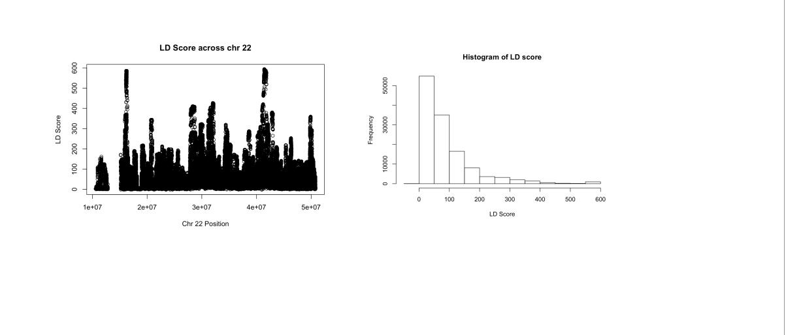
Calculated by Yanyu Liang using GTEx V8 reference variant set
Genetic Correlation Between Traits
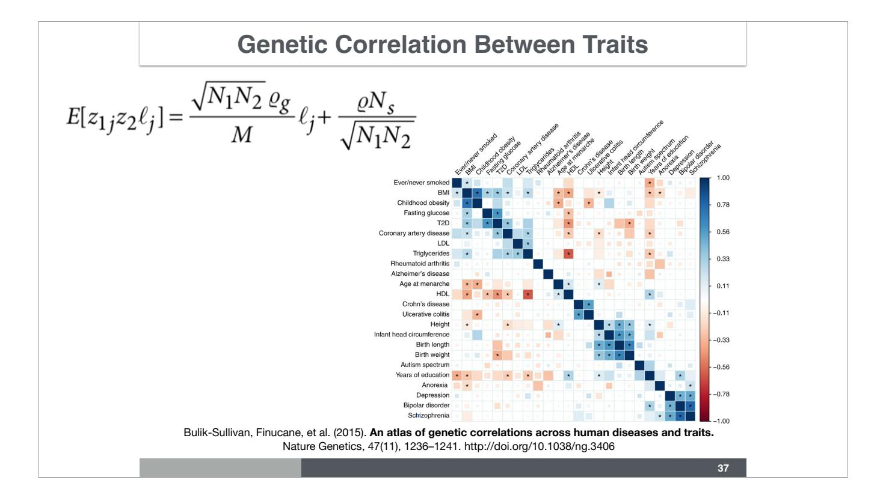
With the same assumptions, LD score regression can estimate genetic correlation between traits:
\[E[z_{1j} z_{2j} \mid l_j] = \frac{\sqrt{N_1 N_2}}{M} \varrho_g \cdot l_j + \frac{\varrho N_s}{\sqrt{N_1 N_2}}\]
LD Score Regression Estimates h² and Genetic Correlation
\[E[\chi^2 \mid l_j] = \frac{Nh^2}{M} l_j + Na + 1 \quad \leftarrow \text{ heritability + confounders}\]
\[E[z_{1j} z_{2j} \mid l_j] = \frac{\sqrt{N_1 N_2}}{M} \varrho_g \cdot l_j + \frac{\varrho N_s}{\sqrt{N_1 N_2}} \quad \leftarrow \text{ genetic correlation}\]
By partitioning LD scores into functional categories, we can also partition heritability by functional annotation.
Genetic Correlation Among Cancers
| Breast | Colorectal | Lung | Ovarian | Pancreatic | Prostate | |
|---|---|---|---|---|---|---|
| Breast | 1 | 0.22 (0.09) | 0.27 (0.11) | 0.26 (0.20) | 0.17 (0.19) | 0.06 (0.09) |
| Colorectal | — | 1 | 0.31 (0.10) | -0.08 (0.13) | 0.55 (0.19) | 0.09 (0.07) |
| Lung | — | — | 1 | -0.17 (0.17) | 0.32 (0.19) | 0.095 (0.08) |
| Ovarian | — | — | — | 1 | -0.40 (0.29) | 0.02 (0.14) |
| Pancreatic | — | — | — | — | 1 | -0.06 (0.14) |
| Prostate | — | — | — | — | — | 1 |
Genetic Correlation: Cancer and Other Diseases
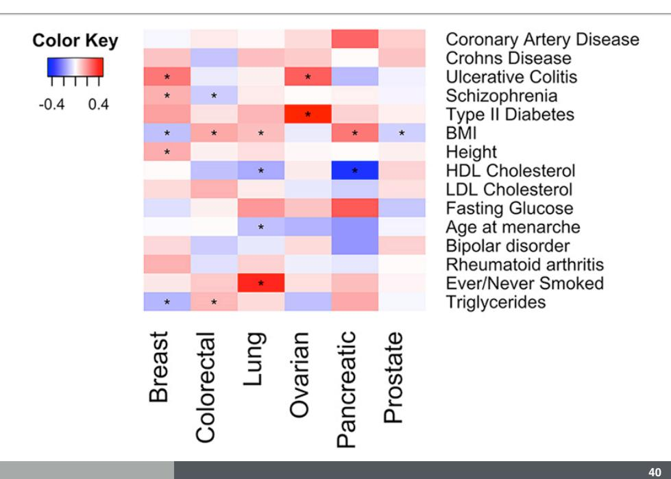
Caveat: Assortative Mating Confounds Genetic Correlation
Cross-trait assortative mating inflates genetic correlation estimates
Border et al. Cross-trait assortative mating is widespread and inflates genetic correlation estimates. Science, 2022.
Genetic Correlation Among Psychiatric Diseases
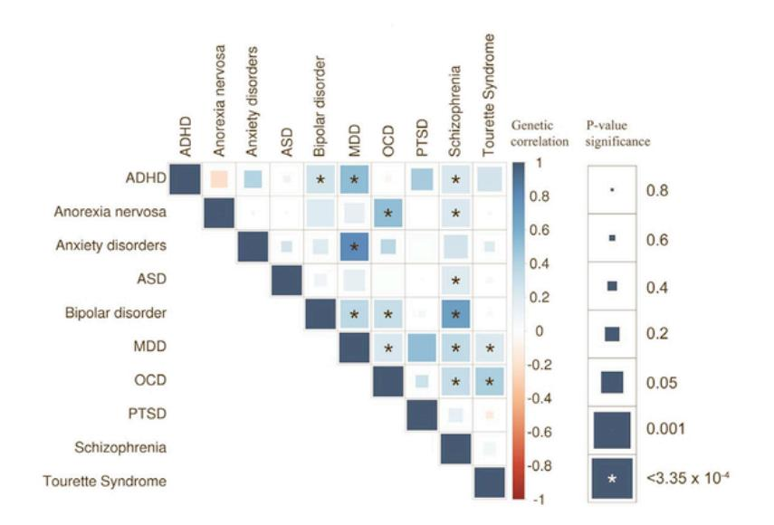
Brainstorm Consortium. Analysis of shared heritability in common disorders of the brain. Science, 2018.